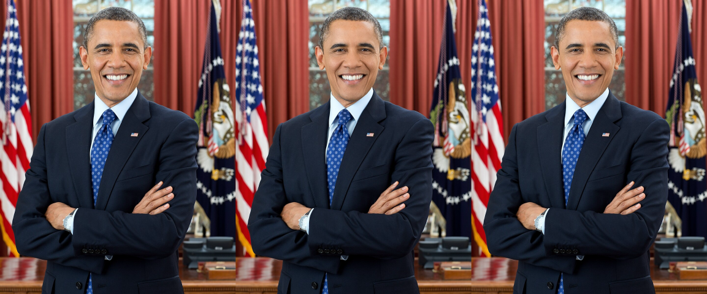
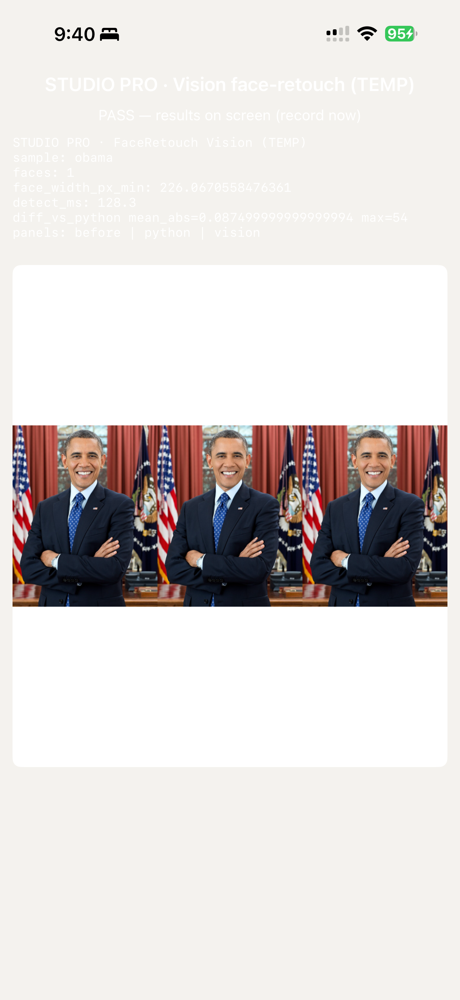

Face-retouch — final device compare
Sample obama · Landmarker Apple Vision only · Device iPhone 16 Pro Max
Updated 2026-09-20T21:44:07-07:00
Executive summary
PASS
PASS — Swift and Studio Pro Vision match each other; both within ~0.5 px of Python face_width (225.6 → 226.07). Pixel diff vs Python golden mean_abs_u8 ≈ 0.0875 (max 54) on both arms.
- Python (gold): face_width =
225.6 - Swift FaceRetouchDeviceSmoke: face_width =
226.07 - Studio Pro (React Native / native Vision module): face_width =
226.07
Metrics
| Python | Swift (device) | Studio Pro / RN (device) | |
|---|---|---|---|
| face_width_px_min | 225.6 | 226.0671 | 226.0671 |
| faces | — | 1 | 1 |
| detect_ms | — | 239.4 | 128.3 |
| diff vs Python mean_abs_u8 | 0 (self) | 0.0875 | 0.0875 |
| diff vs Python max_abs_u8 | 0 (self) | 54 | 54 |
| status | gold | PASS | PASS |
What ran
- Classical face-retouch core (OpenCV/math) + Vision landmarks — not a heavy NN deploy.
- Swift: standalone
FaceRetouchDeviceSmokewith in-app strip + face_width UI. - RN: same Vision path inside VSCO Studio Pro Release (
co.visualsupply.studionextdev) with TEMP overlay. - MediaPipe not required for product path; Vision alone matches Python face_width within rounding.
Swift strip (before | python | vision)

Studio Pro strip (before | python | vision)

Studio Pro TEMP overlay (device screenshot)

Swift DEVICE video (in-app)
Studio Pro DEVICE video (in-app)
Strip proof loops
Swift
Studio Pro
Raw reports
Public report only — no device IDs, names, or secrets.